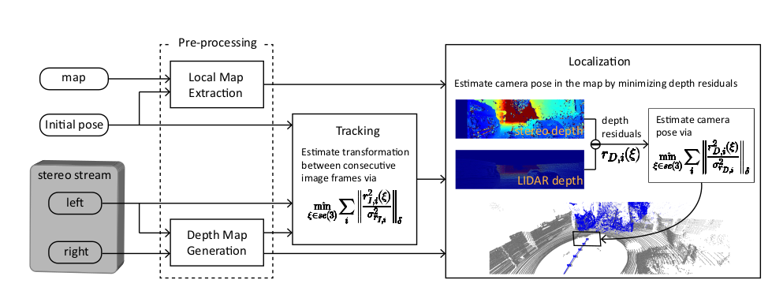
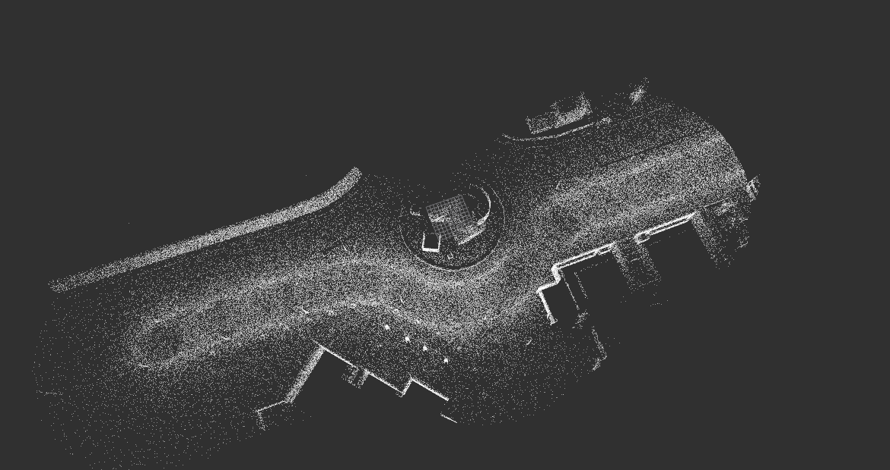
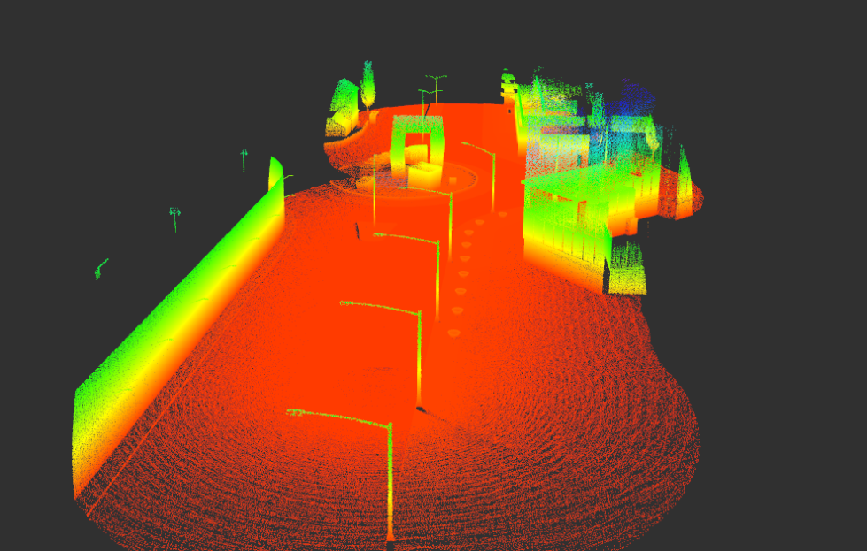
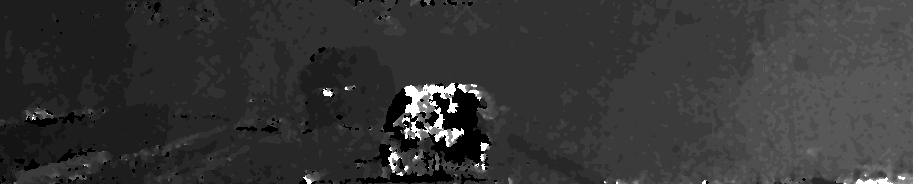
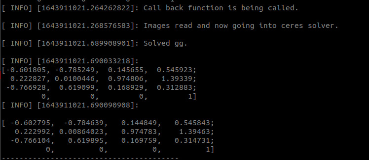
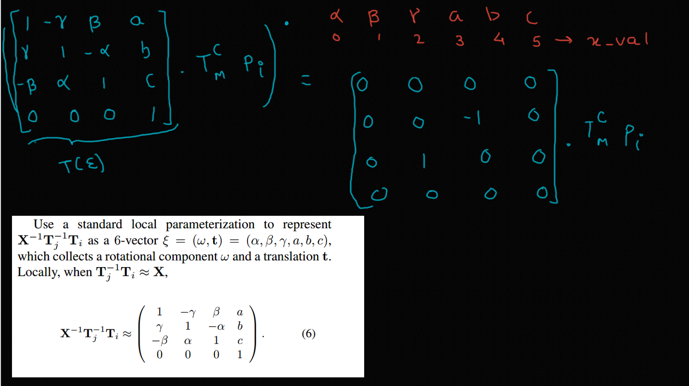

|
The Pipeline

In this work, we use a 4-stage process inspired by the paper "Stereo Camera Localization in 3D LiDAR Maps" by KAIST.
Stage 1 : Local Map Extraction
This stage uses a coarse estimate of the agent's pose and the global LiDAR map, and usea a kd-tree to
extract the local map.
For this implementation, the coarse estimate of a GPS pose has been assumed, however, the same pipeline can be extended to
GPS-denied environments, using frame-to-frame incremental pose update with only GPS initialisation.

The local map is generated via pcl::octree::OctreePointCloudSearch,
which searches for neighbours within a voxel at a given point which in our case is the initial pose obtained
from VINS-Fusion.
Stage 2 : Depth Map Generation
The left and the right image from the stereo camera is used to compute the disparity map. From disparity map, we obtain the depth of a point using the formula:
disparity = x - x' = (B*f)/Z
Here, B is baseline, i.e, distance between the left and right camera & f is the focal length of the camera. Z is the depth of that pixel value.
Example, depth image:

Stage 3 : Tracking
To provide an initial estimate for our non-linear optimizer (written in Ceres Solver, we perform traditional feature based tracking on
one of the stereo pair cameras, using ORB-SLAM in this case. Initial experimentation with VINS-Fusion was also done.
Stage 4 : Localization
The final camera pose is obtained by minimizing the depth residual which is the difference between the depth of the map point in
local map and the corresponding stereo depth. This non-linear optimization problem is solved by Ceres-Solver.

|